Surface water simulation
Introduction to flow simulation
Helena Mitasova, Anna Petrasova, Vaclav Petras
Learning objectives
- concept of geometry driven flow and spread
- surface gradient and flowlines
- flat areas and depressions
- methods for flow routing on raster DEMs
- flooding as spread
- height above the nearest drainage technique
Geometry driven flow simulations
- special case of process based, deterministic modeling
- focus on spatial pattern, steady state
- flowtracing or flooding over complex surfaces
- controled by elevation surface represented as DEM
- in optimization problems: cost surface
Types of surface water simulations
- Surface water flow - overland flow accumulation
- Flooding / inundation - spread of rising water level
- Coupled flooding and surface flow - active research area
- Coupled storm surge, river flooding and overland flow
 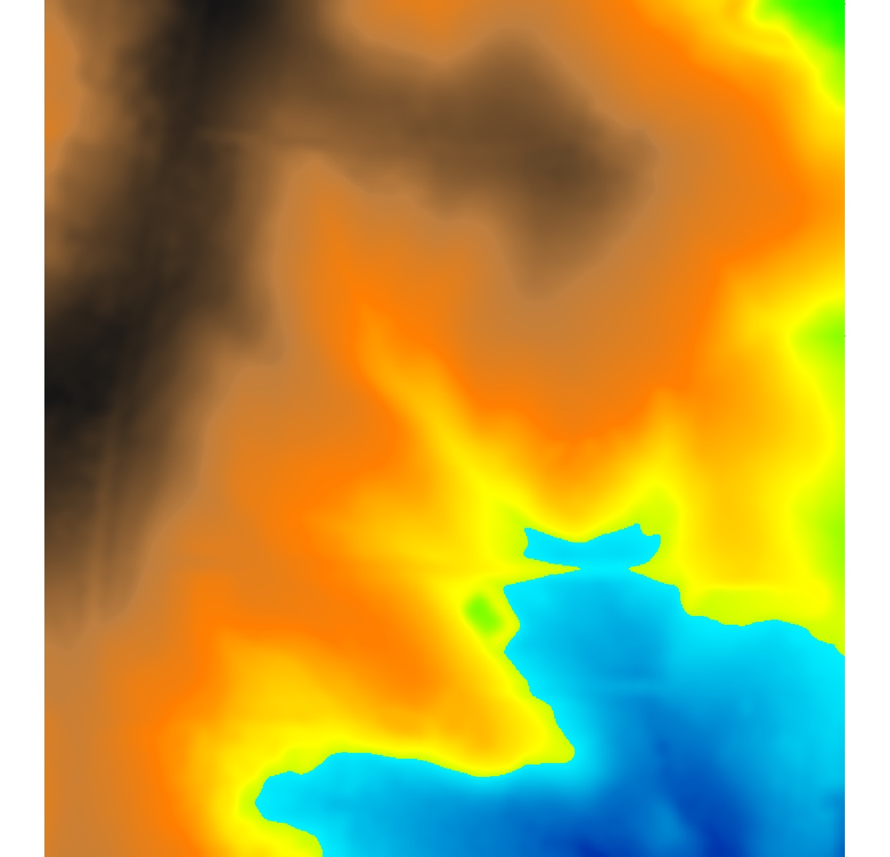
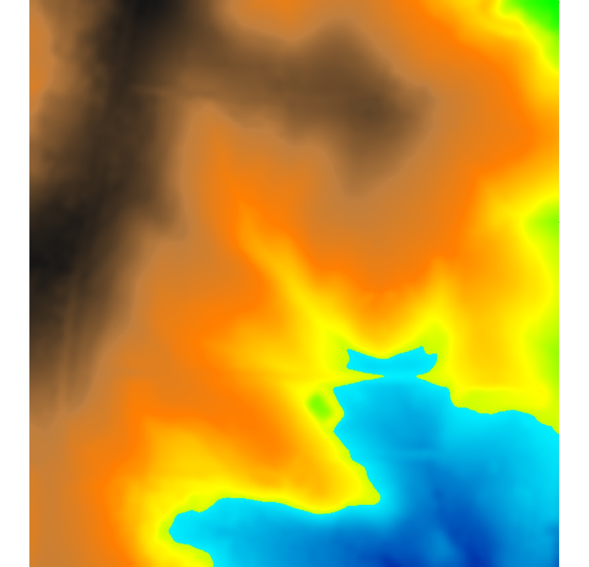
These processes are controled by elevation surface
Flow over complex surfaces
note that the direction of flow is minus $\nabla f$, because gradient vector points upslope
Gradient vector: slope and aspect
- $- \nabla f$ is a vector in the steepest slope direction (aspect),
its magnitude is slope steepness (rise over run).
- slope $\beta$ and aspect $\alpha$:
$$\beta^\circ = {\arctan}\sqrt{f_x^2+f_y^2} \qquad \beta\%=100 \sqrt{f_x^2+f_y^2}$$
$$\alpha^\circ = {\arccos} \left( -f_y \over \sqrt{f_x^2+f_y^2} \right) $$
- we can compute gradient using slope and aspect angle
$$ f_x = \tan \beta . \cos \alpha, \qquad f_y = \tan \beta . \sin \alpha$$
recall that
$$(f_x, f_y) = \left( {\partial f \over \partial x}, {\partial f \over \partial y} \right), \; z = f(x,y)$$
Estimating gradient from raster DEM
- Discrete: D8 or D16 $\Delta z_{max}$ in 3x3 or 5x5 moving window,
results in discrete directions e.g., 0,45, ... deg
- Continuous D-infinity: partial derivatives of
a suitable approximation function, such as spline or polynomial
Estimating gradient from raster DEM
Fitting second order polynomial to 9 grid points of 3x3 window
using weighted least squares leads to simple equations for estimating $f_x, f_y$:
$$z(x,y)=a_0+a_1 x + a_2 y + a_3 xy + a_4 x^2 + a_5 y^2$$
$$f_x={{(z_{i-1,j-1}-z_{i+1,j-1})+2(z_{i-1,j}-z_{i+1,j})+(z_{i-1,j+1}-z_{i+1,j+1})} \over {8\Delta x}}$$
$$f_y={{(z_{i-1,j-1}-z_{i-1,j+1})+2(z_{i,j-1}-z_{i,j+1})+(z_{i+1,j-1}-z_{i+1,j+1})} \over {8\Delta y}}$$
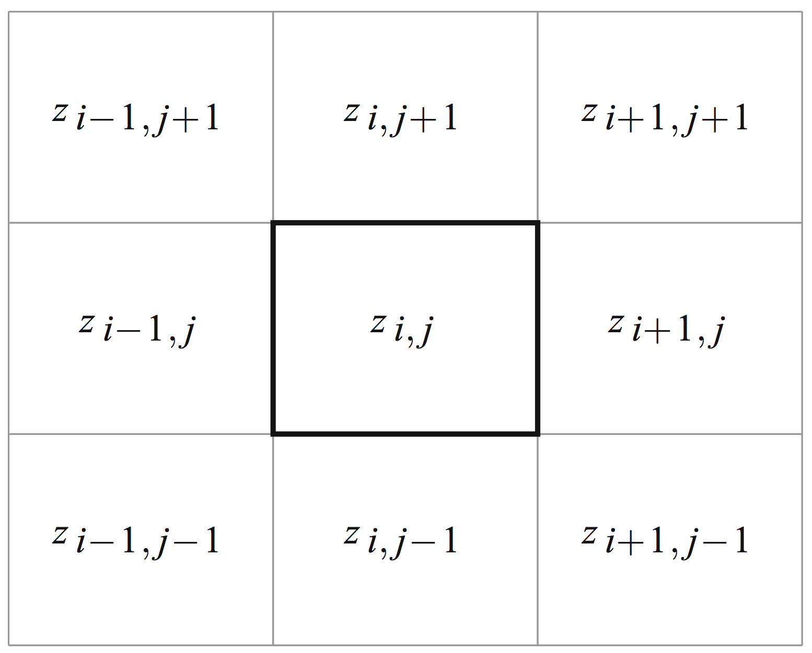
Flow routing over complex surfaces
- flowline - path of a single drop following gradient,
- flow accumulation
- density of flowlines generated from each grid cell,
- cumulative drops routed from each cell,
- upslope contributing area,
- measure of steady state flow depth
- flow patterns depend on algorithm used for gradient, routing and treatment of depressions
- gradient magnitude (slope, flow velocity) is omitted
See GIS582 and supplemental material for flow tracing and flow accumulation methods
http://ncsu-geoforall-lab.github.io/geospatial-modeling-course/lectures/flow.html#/10
Flow routing over complex surfaces
D-inf vector-based algorithm for generating flowlines
flowlines are perpendicular to contours
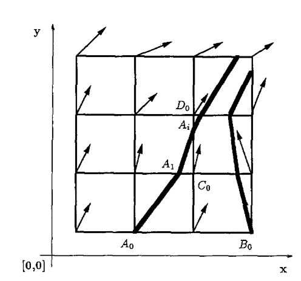
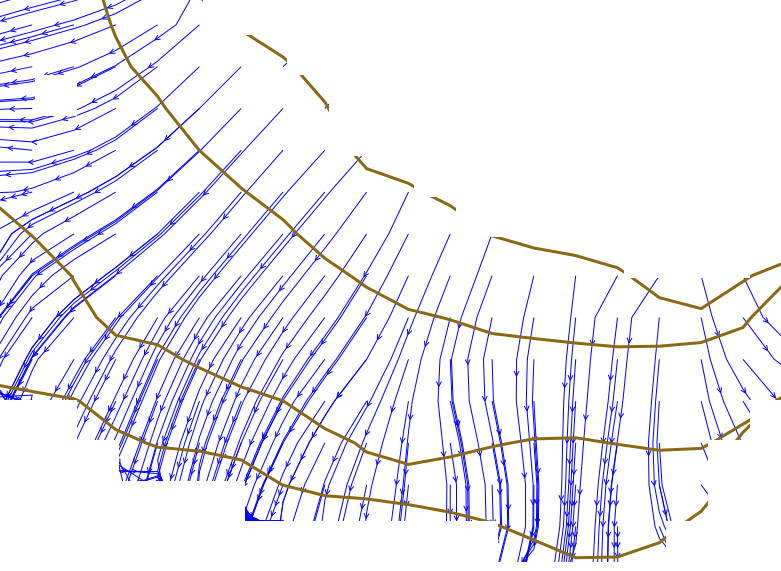
Flow routing over complex surfaces
Flowlines and flow accumulation
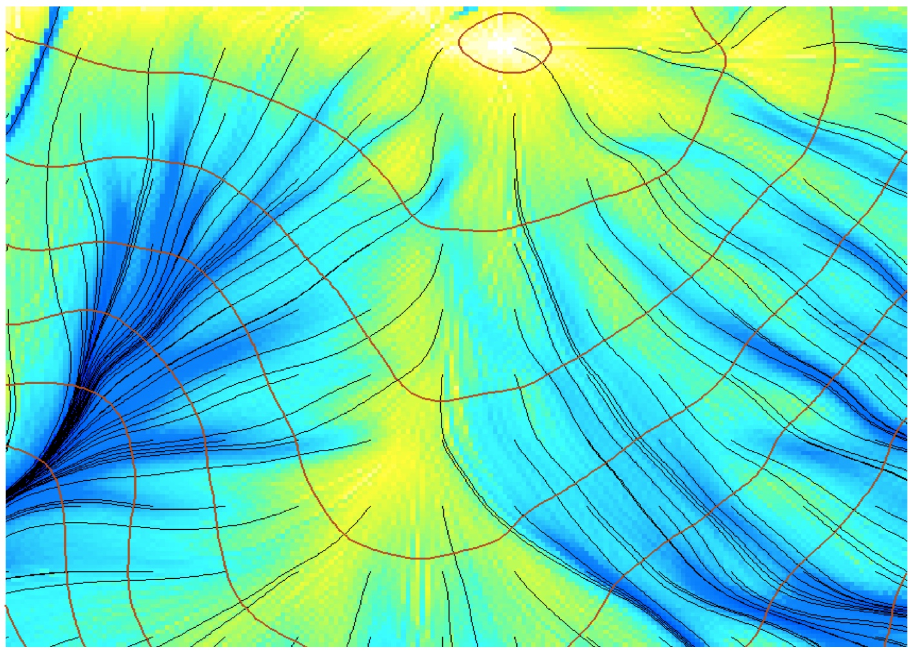
Flow accumulation across landscape
Evolution of steady state flow as water moves through the landscape with steady rainfall and uniform flow velocity

Single flow direction routing
- SFD Single flow direction - moves entire unit of flow into a single downslope cell in the gradient direction
- Discrete D8 and continuous Dinf gradient direction
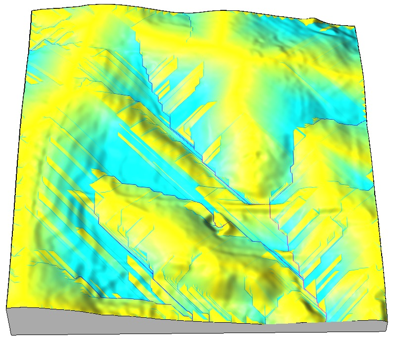
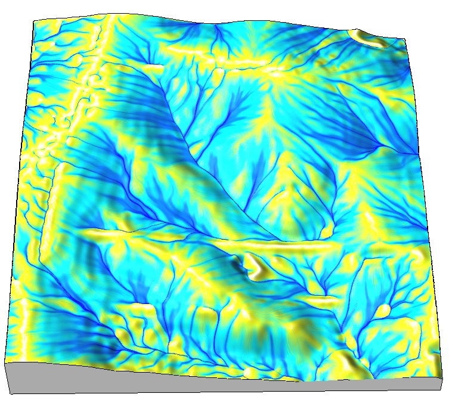
when D8 is sufficient? SFD over noisy surface mitigates the D8 artifact
Flow routing with dispersed flow
MFD multiple flow direction partitions flow into two or more downslope directions
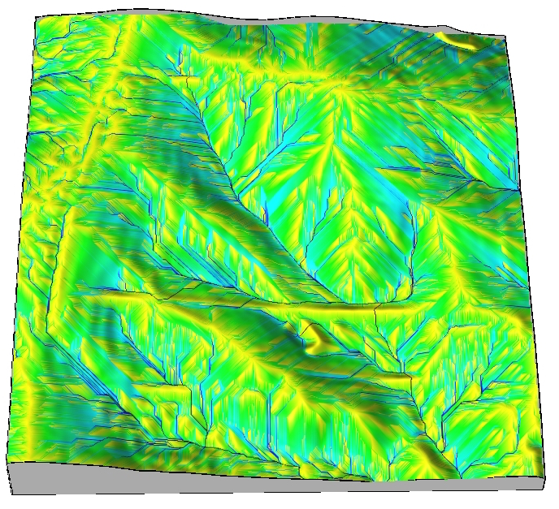
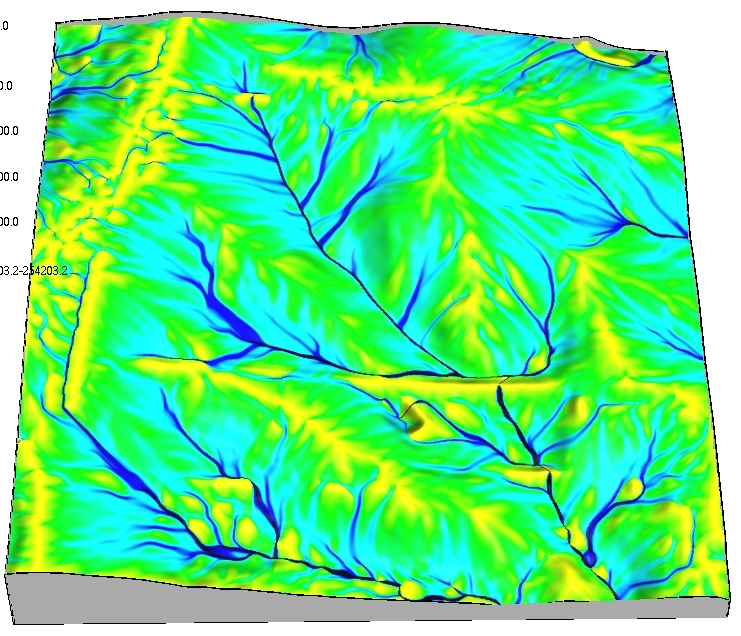
Weighted flow routing
Simulation of spatialy variable source areas
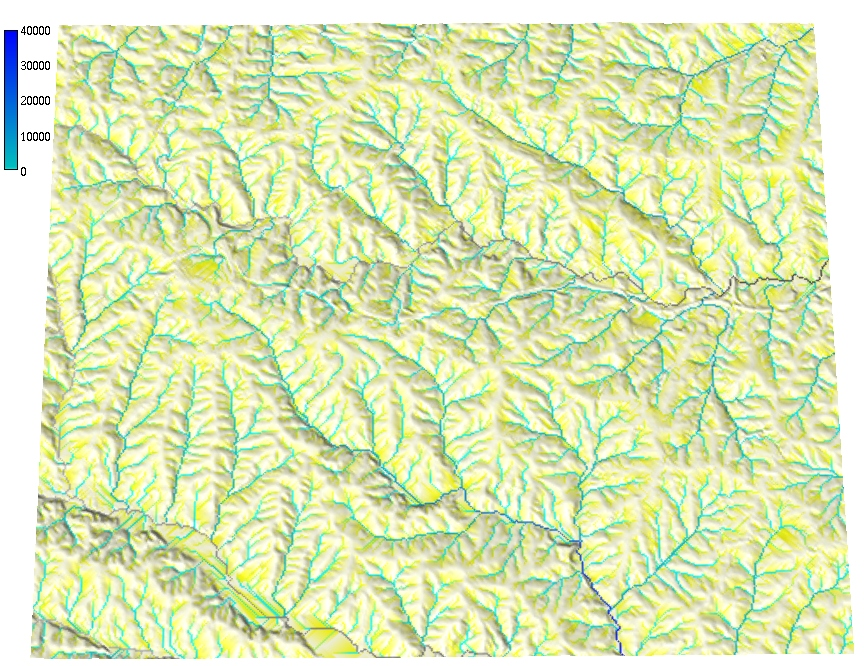

Flat areas and depressions
- What is gradient in flat area? In depressions?
- Many algorithms were developed for routing through flat areas and depressions
- Hydrological flattening, enforcement, conditioning
- New (and some old) algorithms do not require depression filled DEM
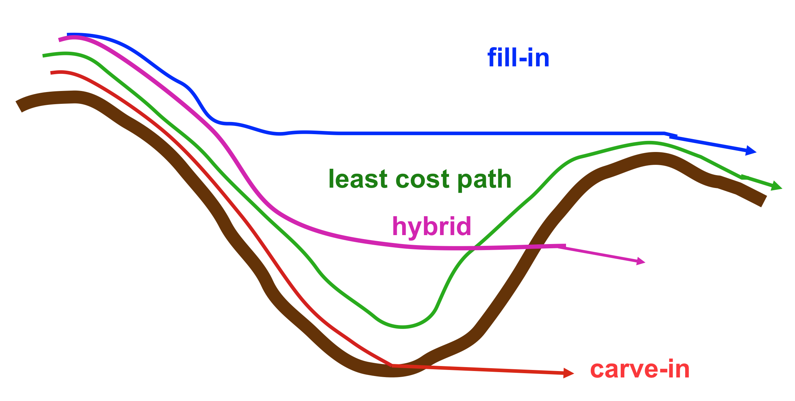
Flow routing for massive DEMs
Least cost path and Priority Flood methods do not require depression filling
- Metz, M., Mitasova, H., Harmon, R.S. (2011) Efficient extraction of drainage networks from massive, radar-based elevation models with least cost path search, Hydrology and Earth System Sciences 15, pp. 667-678. r.watershed in GRASS GIS
- Magalh˜aes, S. V. G., Andrade, M. V. A., Randolph Franklin, W., Pena, G. C., 2012. A new method for computing the drainage network based on raising the level of an ocean surrounding the terrain. In: Gensel, J., Josselin, D., Vandenbroucke, D., Cartwright, W., Gartner, G., Meng, L., Peterson, M. P. (Eds.), Bridging the Geographic Information Sciences. Lecture Notes in Geoinformation and Cartography. Springer Berlin Heidelberg, pp. 391–407. doi: http://dx.doi.org/10.1007/978-3-642-29063-3_21
- Barnes, Lehman, Mulla. “Priority-Flood: An Optimal Depression-Filling and Watershed-Labeling Algorithm for Digital Elevation Models”. Computers and Geosciences. Vol 62, Jan 2014, pp 117–127. doi: “10.1016/j.cageo.2013.04.024”.
- Araujo et al. 2014 Watersheds in disordered media
- Geomorphometry best paper
Flooding
- elevation threshold - bathtub model
- spread of water from source - friction gradient rather than elevation gradient
- hydrologically connected surface water level
- HAND: height above the nearest drainage technique
- interpolation between pre-computed flood levels along the source stream section(FIMAN)
Flooding - bathtub model
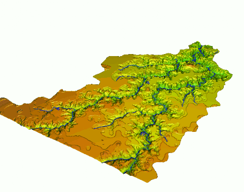
Flooding - lake model
- Creates hydrologically connected area (lake) from a given point at a given elevation
- Valid for small flat areas with point source, approximates steady state, uniform flooding
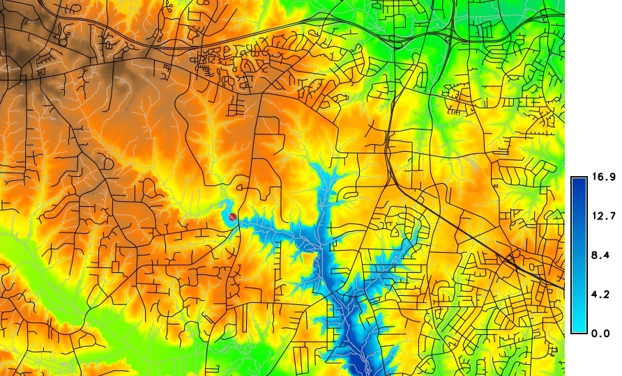
water level at 90m asl
Flooding - lake model
- Simplified storm surge - series of lake models
- Neglects time and water mass: worst case scenario

Flooding - inundation (spread) model
- Channel has variable elevation: Height Above Nearest Drainage methodology
- Using flow direction, compute raster where each cell is $\Delta z$ between the given cell
and the the cell on the stream into which the cell drains.
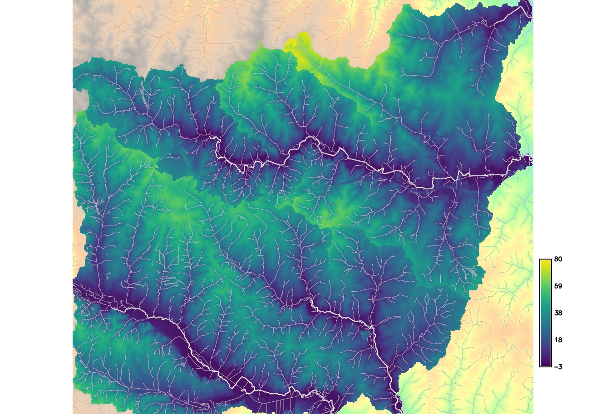
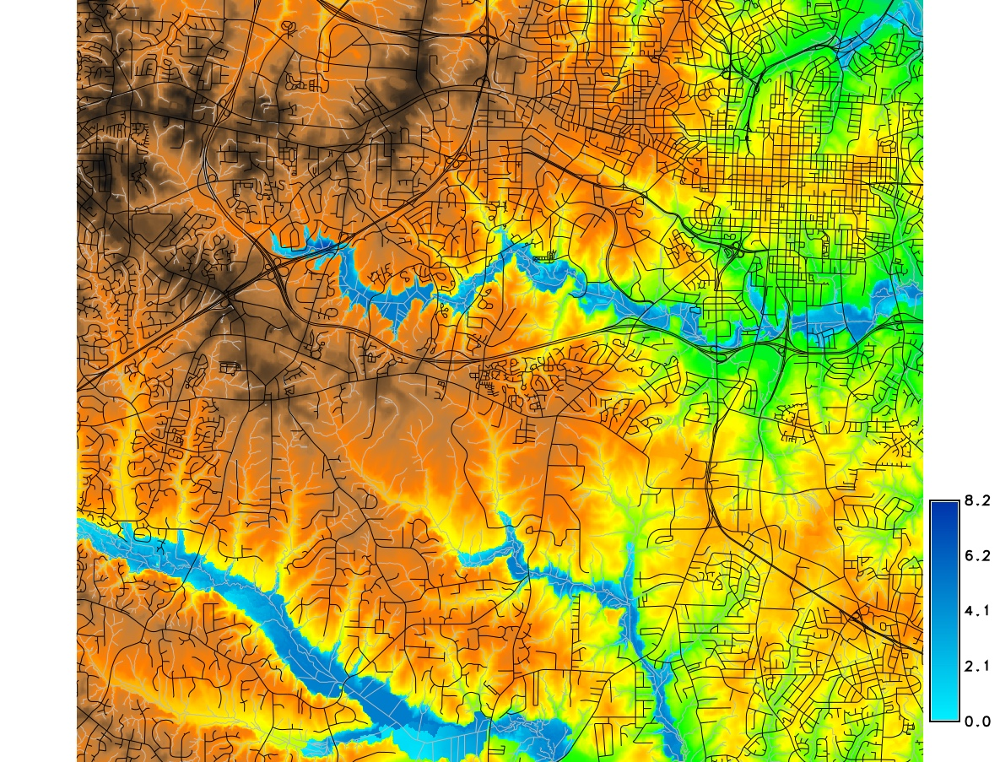